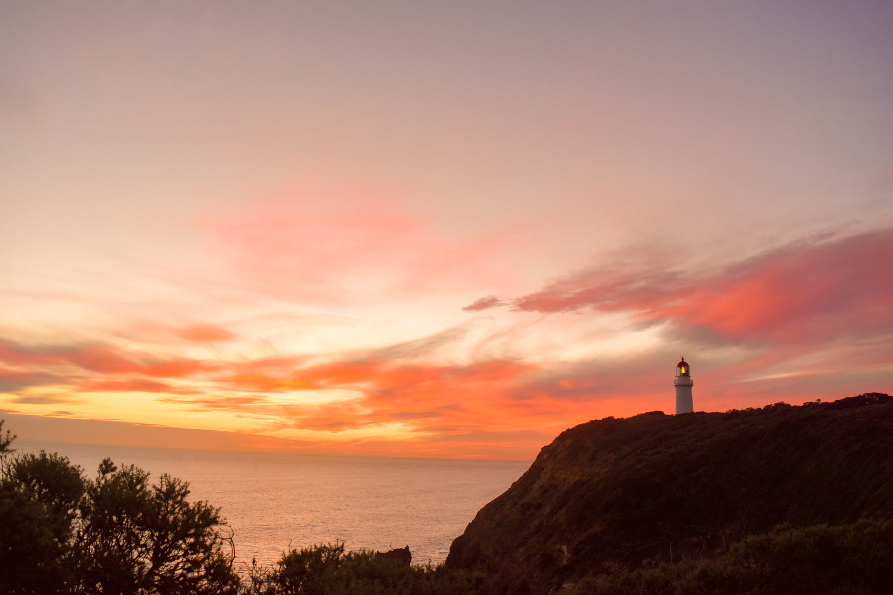
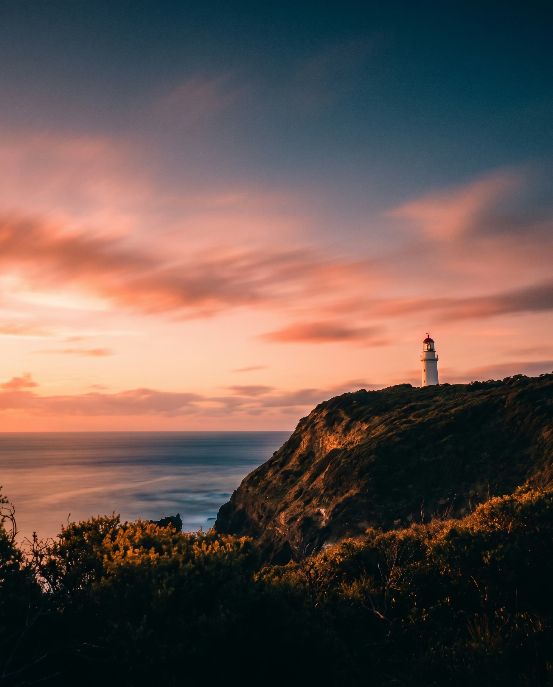
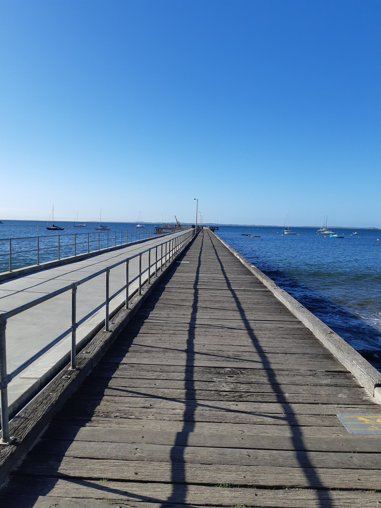
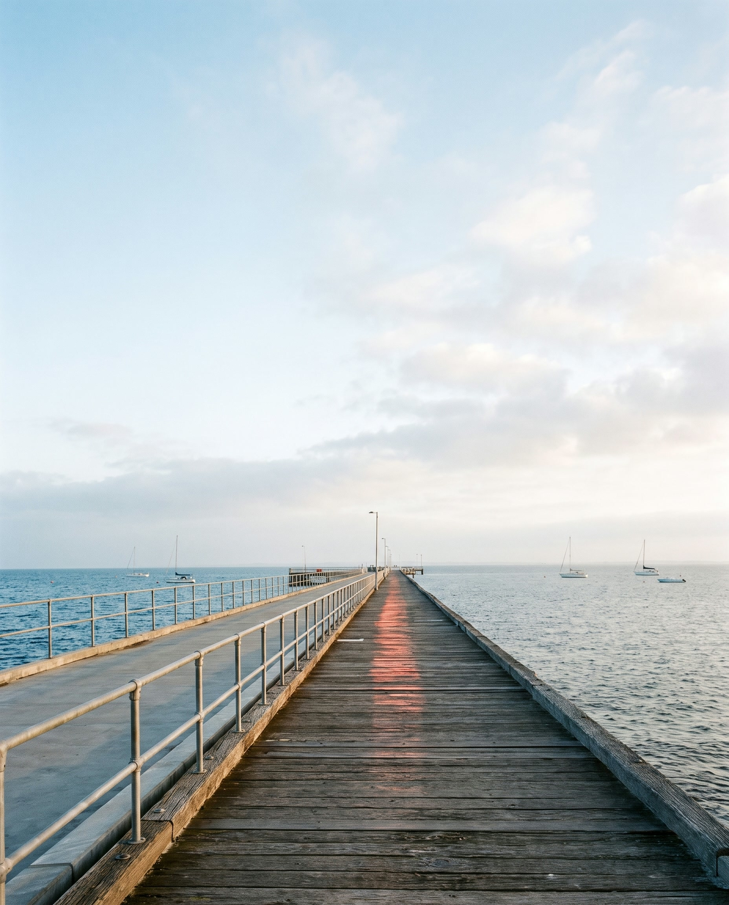
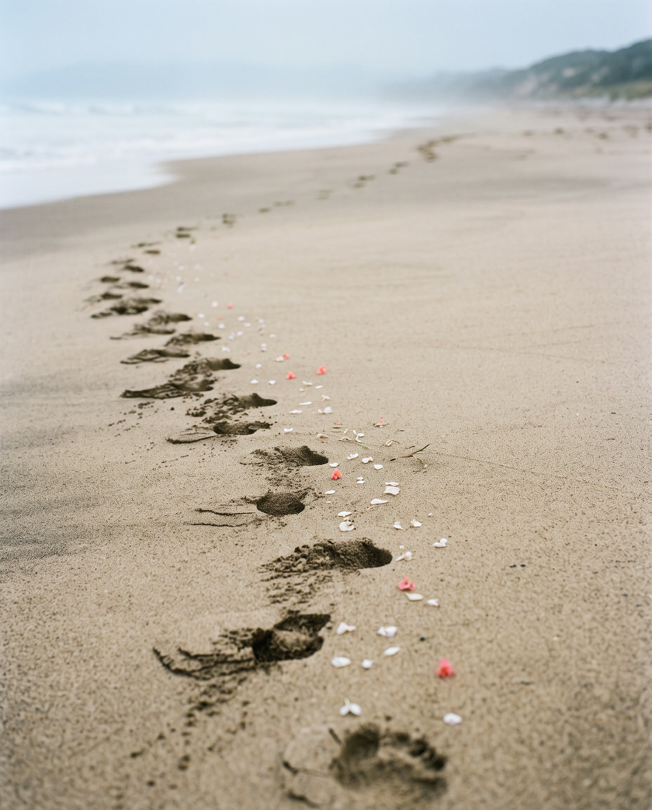
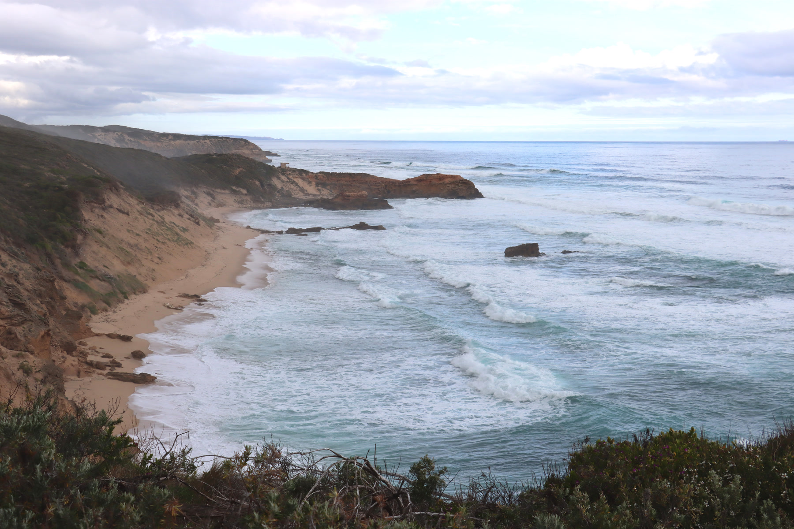
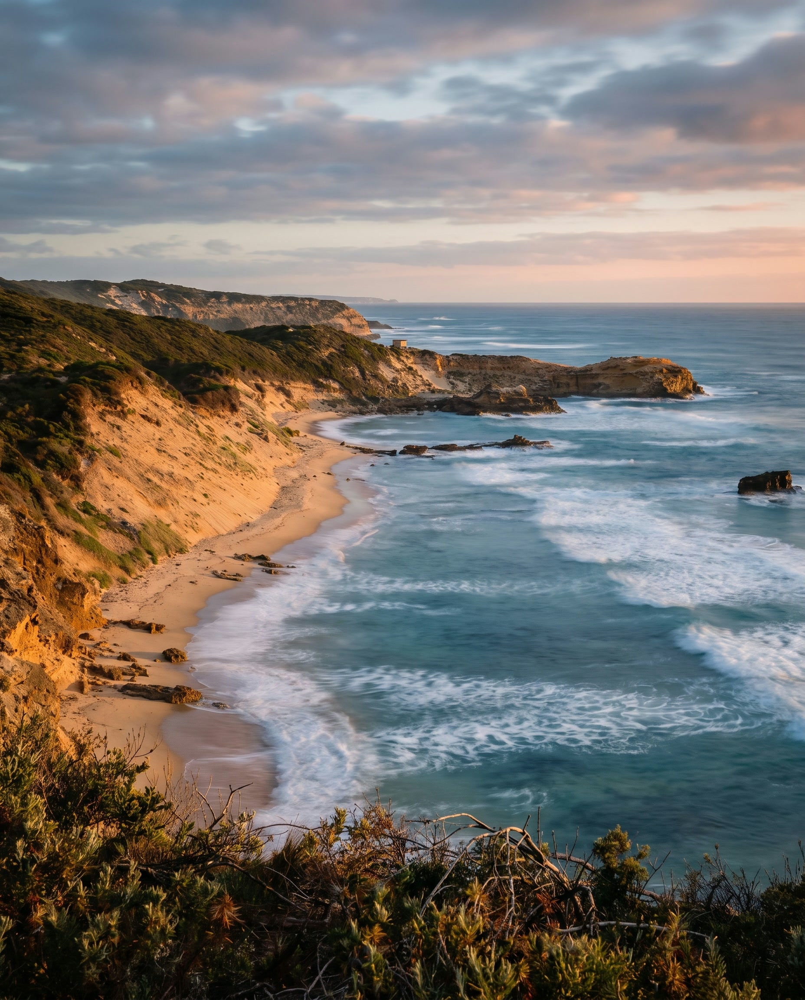
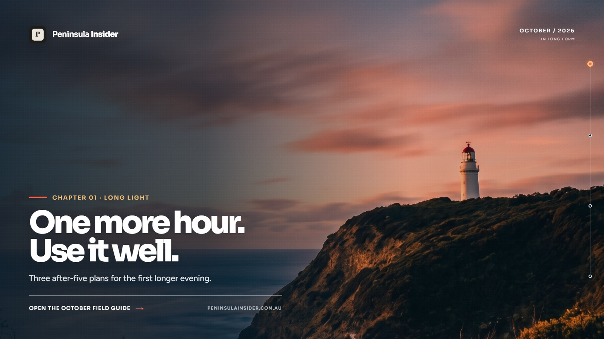
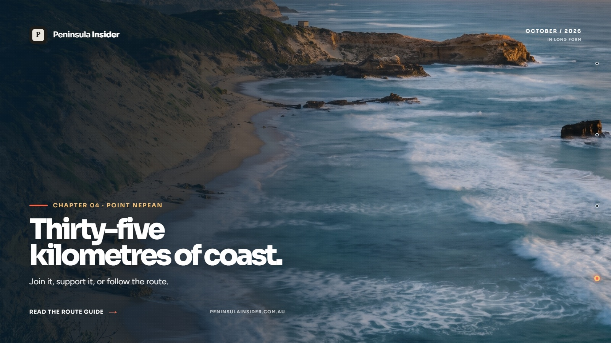

Research
Broad visual search, then a strict rights cut. Only CC0 or Creative Commons images with traceable source pages entered the machine.
October 2026 · Production campaign pack
One more hour. Use it well. Four evidence-led chapters, rebuilt as a coherent photography, design, motion, copy and website system.
Reference-led creative is clearly labelled. Nothing in this pack has been scheduled or released to Peninsula Insider, email or social channels.
Creative production method
The source photograph carries location, terrain and compositional truth. Higgsfield creates an expressive, text-free campaign master from that reference. Peninsula Insider branding, wording and channel-safe layouts are then applied deterministically, so the logo and copy cannot mutate.
Broad visual search, then a strict rights cut. Only CC0 or Creative Commons images with traceable source pages entered the machine.
One real Peninsula frame anchors each chapter. Geography is retained; atmosphere and editorial materiality are interpreted.
Nano Banana Pro produced four text-free 2K masters. Seedance supplied three motion studies; one failed render was rejected.
Exact PI icon, Sora and Figtree typography, fixed copy, channel crops, safe zones, downloads, provenance and QA are applied locally.
Reference to campaign master
Every master has an original source beside it. The creative image is an AI-assisted interpretation, never a claim that the generated frame documents an event, venue, person or current condition.

Licensed reference
Reference-led masterWhere will I use the first longer evening?
The opening chapter turns daylight saving into practical utility: three after-five plans with timing, access, parking, safety and a weather alternative. The lighthouse acts as a measure of remaining light, not a generic postcard.

Licensed reference
Reference-led masterWhich Western Port day and session suit me?
Quiet pier geometry gives the literary chapter a strong visual spine. Public copy remains broad enough to support the Western Port field-guide fallback while Coolart access is unresolved.

Reference-led masterCommunity walk, garden Sunday, or both?
One human trace joins two separate plans without fabricating a crowd or venue. Footprints carry Saturday's walk; the restrained petal trail cues Sunday's garden. Final copy will state the two activities separately.

Licensed reference
Reference-led masterParticipating, supporting, or following the coast?
Surf bands become a visual measure of distance. The asset supports a practical route-and-support guide without inventing runners, spectators or event conditions.
Downloadable asset library
Each chapter has a feed asset for Instagram and Facebook, a Story and Reel cover with platform-safe zones, and a wide hero for the website and newsletter. Filter, inspect and download the actual files.
Motion system
Motion stays restrained: cloud, water, haze, petals and a slow camera move. Every clip is silent, H.264, vertical and web-optimised. Play the actual exports below.
QA decision: the first Chapter 01 Higgsfield video contained visible cyan bands and was rejected, not hidden. The published review asset is a clean still-derived motion treatment. Chapters 02 and 03 passed at 1080p; Chapter 04 passed visually at 720p but is not the final delivery resolution.
Channel-ready copy deck
The copy avoids identical cross-posting. Feed captions invite saving and sharing, email earns the click, and website language names the next decision. Event details remain subject to the release gates below.
October gives us one more hour. Use it well. We have mapped three after-five Peninsula plans, each with timing, access and a weather fallback. Save the guide for the first long evening.
Subject: One more hour. Three ways to use it.
Preheader: Practical after-five plans for the first long October evening.
Open the October field guide
Western Port rewards a slower read. We are building a day around pages, water and a quieter horizon, with every access note checked before publication. Save this one for 9 to 11 October.
Subject: Read the other coast.
Preheader: Your Western Port plan, with current access notes and a picnic fallback.
Plan a Western Port day
Walk Saturday. Garden Sunday. Two separate reasons to keep the Mornington weekend, with current booking and access notes gathered in one useful plan.
Subject: Keep the Mornington weekend.
Preheader: A community walk on Saturday, a garden plan on Sunday.
Build your weekend
Thirty-five kilometres of coast. Whether you are walking, supporting or simply curious, our route guide turns a very long day into a clear plan.
Subject: Thirty-five kilometres of coast.
Preheader: The route, the support plan and what to know before 25 October.
Read the route guide
Proposed calendar · Australia/Melbourne
This is the activation sequence, not a schedule claim. Each event-led item gets a source read-back within 72 hours of release. Filters show where the work lands.
| Date | Chapter | Channel | Asset | Purpose | State |
|---|---|---|---|---|---|
| Thu 1 Oct | One more hour | Integrated | Month reveal + after-five guide | Establish the system and earn saves | Proposed |
| Sun 4 Oct | One more hour | Homepage + Stories | Clock-change reminder + motion | Same-day utility | Proposed |
| Wed 7 Oct | Other coast | Integrated | Western Port decision guide | Session, day and picnic choice | Coolart hold |
| 9 to 11 Oct | Other coast | What's On + Stories | Access and availability updates | Keep venue claims current | Conditional |
| Wed 14 Oct | Keep the weekend | Integrated | Mornington weekend guide | Community walk + garden planning | Proposed |
| 17 to 18 Oct | Keep the weekend | What's On + Stories | Booking and access reminders | Last-mile utility | Proposed |
| Tue 20 Oct | Long finish | Integrated | Route and support guide | Registration, support and planning | Proposed |
| 22 to 25 Oct | Long finish | What's On + Stories | Availability and event updates | Honest walk and H&H status | Proposed |
| Sat 31 Oct | Optional | What's On + Stories | Halloweekend utility item | Secondary family utility | Optional |
Website activation
Four in-situ studies carry the same image and wording system into the Peninsula Insider journey: discovery on the homepage, current decisions in What's On, weekly curation in Insider Picks, and route utility inside the long-read.
Three current after-five plans, each with a weather alternative.
Open the field guide →
Current venue access, session choices and the field-guide fallback.
See the verified plan →Two separate plans with booking and access notes.
Build your weekend →
Participating, supporting or following: start with the right plan.
Read the route guide →Photography and generative provenance
The four machine inputs came from Wikimedia Commons source pages with explicit reuse terms. Commercial examples found during research were used only as aesthetic benchmarks and were not downloaded into the pack or supplied to Higgsfield.
Cape Schanck lighthouse at sunset, photographed 21 May 2016. The generated adaptation is conservatively treated under the same licence.
Open source record ↗Flinders Pier, photographed 2 July 2019. The generated adaptation is conservatively treated under the same licence.
Open source record ↗Footprints at St Andrews Beach, published before Unsplash's 2017 licence change and preserved on Commons as CC0.
Open source record ↗Coast near Fort Pearce at Point Nepean, photographed 13 September 2025. The adaptation carries the same conservative treatment.
Open source record ↗What remains before external release
The pack is almost production-ready because the creative and channel work now exist as files. It is not externally release-ready until the volatile event facts and one media quality gap are closed.
Recheck routes, times, access, bookings, cancellations and weather-dependent claims before each release.
Confirm the venue against organiser and Parks Victoria sources, or publish the already-designed Western Port fallback.
Keep H&H as an existing-ticket-holder note unless saleable inventory is observed. Confirm walk operations and registration.
Upgrade Chapter 04 from the approved 720p motion study to a 1080p delivery before it leaves the review environment.
Recommended decision
The coherent creative system, asset sizes, channel roles and website touchpoints are ready for production use. Approval here should authorise fact rechecks and final packaging, not bypass live-event verification or publish externally.
{kind=link}
{kind=link}
.jpg){kind=link}
{kind=link}